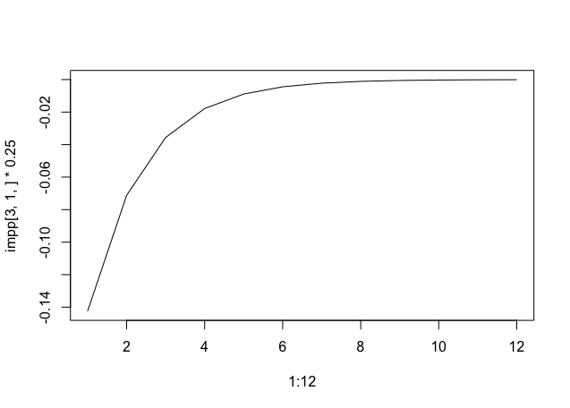

We will implement the model from Galí(2008), chapter 3. We will need to write two separated models, as the sintax for the Sims solver is different of the sintaxe of the Klein solver. First, let`s use the same calibration as Galí(2008):
sigma = 1
phi_pi = 1.5
phi_y = 0.5/4
beta = 0.99
phi = 1
alph = 1/3
ep = 6
theta = 2/3
rho_v = 0.5
Theta = (1-alph)/(1-alph+alph*ep)
lambda = (1-theta)*((1-beta*theta)/theta)*Theta
kappa = lambda*(sigma+(phi+alph)/(1-alph))0.12750000000000006The equations are:
We ignore the $r^n_t$ term as Galí(2008) does. We will write this in a way that is consistent with the Klein method (equation 1), so the matrices are
As in Gali(2008), we will set a initial monetary poliocy shock of 0.25. This works as an initial condition for the model. As usual, we set that the expected value of the shocks are zero. We will receive the impulse response function automatically.
using Plots, RationalExpectations
A = [[1 0 0 0];[-1 1 0 0]; [0 0 beta 0]; [0 -1 1 sigma]]
B = [[rho_v 0 0 0];[0 0 phi_pi phi_y];[0 0 1 -kappa];[0 0 0 sigma]]
C = [1;0; 0; 0]
k0 = [0.25;0]
t=12
choque = [0.; 0;0; 0]
klein_sol = klein(A,B,C,t,k0,choque,[3 4])[ Info: Blanchard Khan conditions satisfied!
12×4 Array{Float64,2}:
0.25 0.0 -0.0359661 -0.142454
0.125 0.053244 -0.0179831 -0.0712271
0.0625 0.026622 -0.00899154 -0.0356135
0.03125 0.013311 -0.00449577 -0.0178068
0.015625 0.0066555 -0.00224788 -0.00890339
0.0078125 0.00332775 -0.00112394 -0.00445169
0.00390625 0.00166388 -0.000561971 -0.00222585
0.00195312 0.000831938 -0.000280986 -0.00111292
0.000976562 0.000415969 -0.000140493 -0.000556462
0.000488281 0.000207984 -7.02464e-5 -0.000278231
0.000244141 0.000103992 -3.51232e-5 -0.000139115
0.00012207 5.19961e-5 -1.75616e-5 -6.95577e-5We can plot the elements of klein_sol to see the irf
Sims methods requires that we write expectations error, e.g. $\eta_t^{\pi} = \pi_t - E_{t-1}(\pi_t)$. We can work it to obtain the following matrices:
See the end of this article for the whole maths of this pne. Here is it, in Julia:
G0 = [[1 0 0 0];[-1 1 0 0];[0 -1 sigma 1];[0 0 0 beta]]
G1 = [[rho_v 0 0 0];[0 0 phi_y phi_pi];[0 0 sigma 0];[0 0 -kappa 1]]
Psi = [1 0 0 0]'
Pi = [[0 phi_pi 0 1];[0 phi_y sigma -kappa]]'
sol_sims = sims(G0,G1,Pi,Psi)
resul = irf(sol_sims,12,0.25)13×4 Array{Float64,2}:
0.25 0.106488 -0.142454 -0.0359661
0.125 0.053244 -0.0712271 -0.0179831
0.0625 0.026622 -0.0356135 -0.00899154
0.03125 0.013311 -0.0178068 -0.00449577
0.015625 0.0066555 -0.00890339 -0.00224788
0.0078125 0.00332775 -0.00445169 -0.00112394
0.00390625 0.00166388 -0.00222585 -0.000561971
0.00195313 0.000831938 -0.00111292 -0.000280986
0.000976563 0.000415969 -0.000556462 -0.000140493
0.000488281 0.000207984 -0.000278231 -7.02464e-5
0.000244141 0.000103992 -0.000139115 -3.51232e-5
0.00012207 5.19961e-5 -6.95577e-5 -1.75616e-5
6.10352e-5 2.5998e-5 -3.47788e-5 -8.7808e-6Last, but not least, Galí gives an analytical solution for $\tilde{y}_t$ and $\pi_t$ They are:
And $\Lambda_v = \frac{1}{(1-\beta{}\rho_v)[\sigma(1-\rho_v)+\phi_y]+\kappa(\phi_{\pi}-\rho_v)}$
Lets put the analytical solutions in Julia:
Lambda_v = 1/((1-beta*rho_v)*(sigma*(1-rho_v)+phi_y)+kappa*(phi_pi - rho_v))
true_y(v) = -(1-beta*rho_v)*Lambda_v*v
true_pi(v) = -kappa*Lambda_v*v
true_path = zeros(13,3)
initial_shock = 0.25
shock = zeros(13)
shock[2] = initial_shock
for j = 2:13
true_path[j,1] = rho_v*true_path[j-1] + shock[j]
true_path[j,2] = true_y(true_path[j,1])
true_path[j,3] = true_pi(true_path[j,1])
endWe are able to compare the analytical solution with the estimated solutions. First, the shock on $v_t$
plot(true_path[2:13,1], lab = "Analytical Solution")
plot!(resul[:,1], lab = "Gensys Answer")
plot!(klein_sol[:,1], lab = "Klein Answer")Here is the shock in the output gap:
plot(true_path[2:13,2], lab = "Analytical Solution")
plot!(resul[:,3], lab = "Gensys Answer")
plot!(klein_sol[:,4], lab = "Klein Answer")And the shock in the inflation:
plot(4*true_path[2:13,3], lab = "Analytical Solution")
plot!(4*resul[:,4], lab = "Gensys Answer")
plot!(4*klein_sol[:,3], lab = "Klein Answer")The solutions of Klein`s method and gensys are actually close, but far away from the analytical solution. This seems to be due the Schur decomposition. Here is the IRF of the inflation to the same shock, but computed using Christopher Sims implementation in R:
